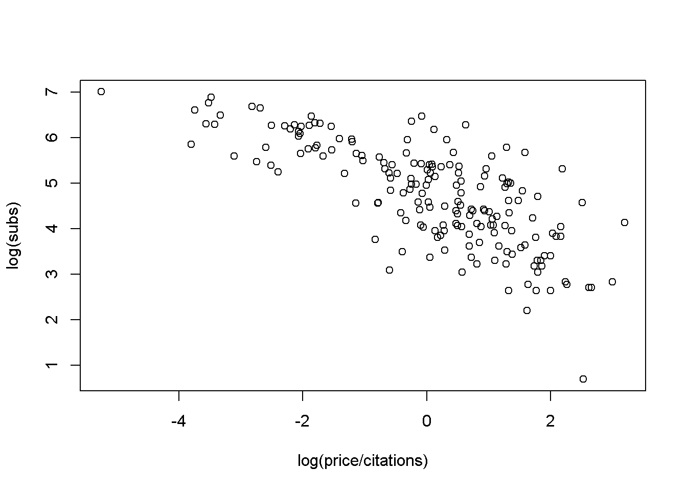
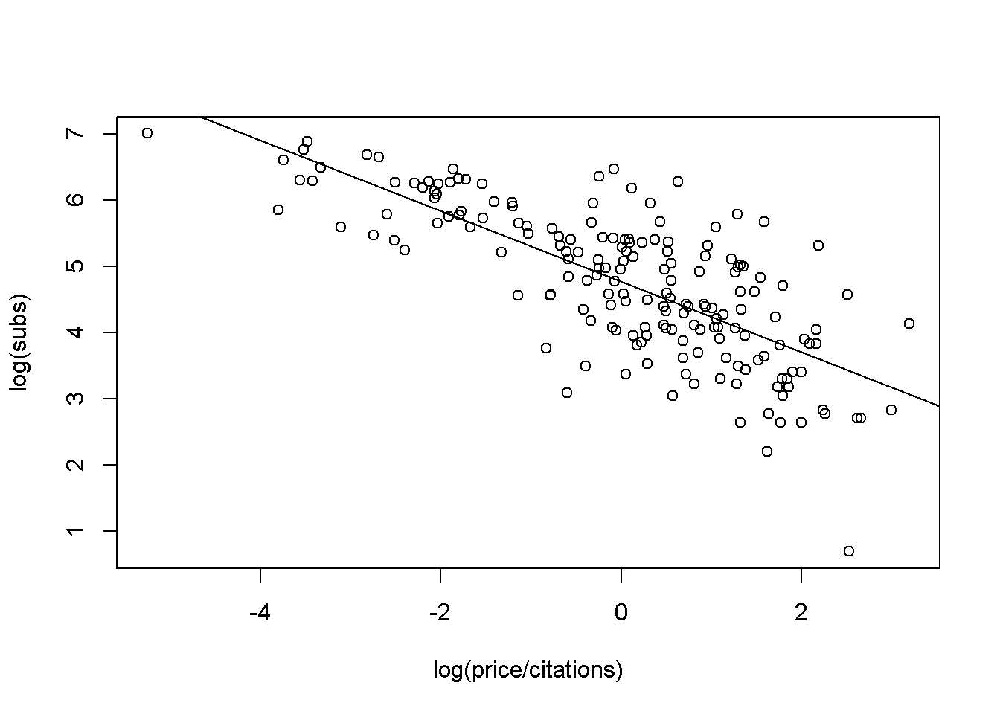
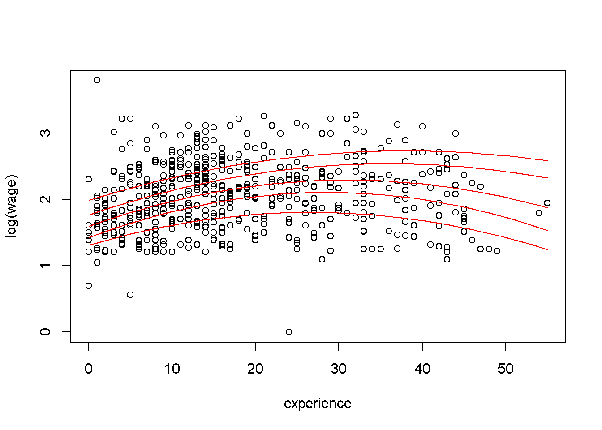
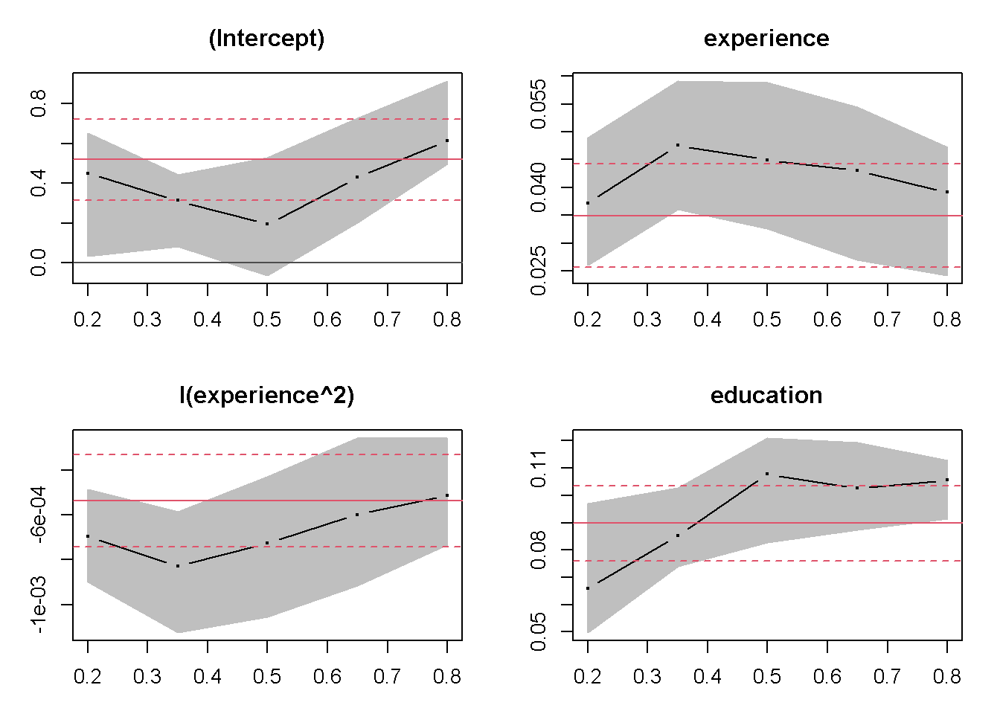
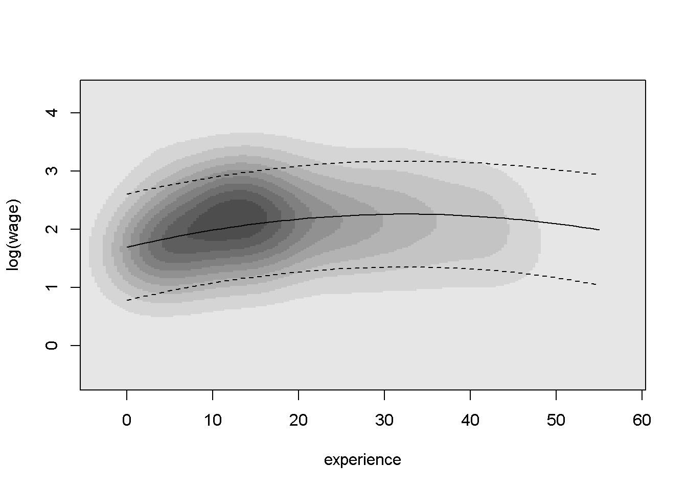

1.4 Ejemplos introductorios a sesiones típicas en R
Esta breve sección, además de proporcionar dos ejemplos introductorios sobre el ajuste de modelos de regresión, describe algunas características básicas de R, incluyendo las facilidades y el modelo de desarrollo de software que contribuyen a programar de forma eficiente. Para los más interesados, la parte final de la presente sección describe brevemente la historia de R.
Para una primera impresión del software estadístico R, resulta necesario: “mirar y sentir.” En consecuencia, se ofrecen ejemplos introductorios a sesiones típicas en R, en la que se analizarán brevemente dos conjuntos de datos. Lo anterior debería servir como una ilustración de cómo se pueden realizar las tareas básicas y cómo las operaciones empleadas se generalizan, modifican y amplían para tareas más avanzadas. Se sabe que no todos los detalles serán completamente expuestos de manera transparente en esta etapa, pero estos ejemplos deberían coadyuvar a dar una primera impresión de la funcionalidad y sintaxis de R. Las explicaciones sobre todos los detalles técnicos se posponen para los capítulos siguientes, donde se proporcionan análisis más completos.
Ejemplo 1: La demanda de revistas de economía
Se comienza con un pequeño conjunto de datos tomados de Stock and Watson (2015) y Watson (2007) que proporciona información sobre el número de suscripciones de bibliotecas a revistas económicas en los Estados Unidos de América en el año 2000. El conjunto de datos, originalmente recopilado por Bergstrom (2001), está disponible en el paquete (Christian Kleiber and Zeileis 2020) con el nombre Journals. Se puede cargar via:
# paquete
data("Journals", package = "AER")Los comandos necesarios para explorar el conjunto de datos son:
# comando
dim(Journals)
#> [1] 180 10
# comando
names(Journals)
#> [1] "title" "publisher" "society" "price" "pages"
#> [6] "charpp" "citations" "foundingyear" "subs" "field"Los comandos revelan que Journals es un conjunto de datos con \(180\) observaciones (las revistas) sobre \(10\) variables, incluido el número de suscripciones a la bibliotecas (subs), el precio (price), el número de citas (citations) y una variable cualitativa que indica si la revista es publicada por una sociedad o no (society).
Aquí, interesa investigar la relación entre la demanda de revistas de economía y su precio. Una medida adecuada del precio de las revistas científicas es el precio por cita. Una gráfica de dispersión (en logaritmos) se puede obtener via:
# gráfica de dispersión de la suscripción a la biblioteca
# a partir del precio por cita (ambos en logaritmos)
plot(log(subs) ~ log(price/citations), data = Journals)
La gráfica muestra claramente que el número de suscripciones disminuye con el precio.
El modelo de regresión lineal correspondiente se puede ajustar fácilmente mediante mínimos cuadrados ordinarios (MCO) utilizando la función lm() (para un modelo lineal) y la misma sintaxis:
# modelo de regresión lineal correspondiente a la suscripción a la biblioteca
# a partir del precio por cita (ambos en logaritmos)
j_lm <- lm(log(subs) ~ log(price/citations), data = Journals)
# agregar línea de mínimos cuadrados
plot(log(subs) ~ log(price/citations), data = Journals)
abline(j_lm)
El comando abline() agrega la línea de mínimos cuadrados a la gráfica de dispersión construida anteriormente. Un resumen detallado del modelo ajustado j_lm se puede obtener via:
summary(j_lm)
#>
#> Call:
#> lm(formula = log(subs) ~ log(price/citations), data = Journals)
#>
#> Residuals:
#> Min 1Q Median 3Q Max
#> -2.72478 -0.53609 0.03721 0.46619 1.84808
#>
#> Coefficients:
#> Estimate Std. Error t value Pr(>|t|)
#> (Intercept) 4.76621 0.05591 85.25 <2e-16 ***
#> log(price/citations) -0.53305 0.03561 -14.97 <2e-16 ***
#> ---
#> Signif. codes: 0 '***' 0.001 '**' 0.01 '*' 0.05 '.' 0.1 ' ' 1
#>
#> Residual standard error: 0.7497 on 178 degrees of freedom
#> Multiple R-squared: 0.5573, Adjusted R-squared: 0.5548
#> F-statistic: 224 on 1 and 178 DF, p-value: < 2.2e-16Específicamente, el comando anterior proporciona el resumen habitual de los coeficientes (con estimaciones, errores estándar, estadísticos de prueba y valores p) así como la \(R^2\) asociada, junto con otra información. Para la regresión de las revistas, la elasticidad estimada de la demanda respecto al precio por cita es de \(-0.5331\), que es significativamente diferente de \(0\) en todos los niveles convencionales. La \(R^2 = 0.557\) del modelo es bastante satisfactorio para una regresión de corte transversal.
Un análisis más detallado con información adicional, emplenado comando mucho más complejos de R, se proporcionan en 2.
Ejemplo 2: Determinantes de los salarios
En el ejemplo anterior, se mostró cómo ajustar un modelo de regresión lineal simple para obtener una primera impresión de la apariencia y sensación de R. Los comandos para llevar a cabo el análisis a menudo se escriben casi por completo en inglés, lo que facilita la forma en que se comunica con el sistema. Para realizar tareas más complejas, los comandos también se vuelven más técnicos; sin embargo, las ideas básicas siguen siendo las mismas. Por lo tanto, todos deberían poder seguir el análisis y reconocer muchas de las estructuras del ejemplo anterior, incluso si en el presente curso no se explican a detalle todos las funciones. Una vez más, el propósito es brindar un ejemplo motivador que ilustre la facilidad con la que se pueden realizar algunas tareas más avanzadas en R. En los capítulos siguientes se proporcionan más detalles, tanto sobre los comandos como sobre los datos.
La aplicación considerada aquí es la estimación de una ecuación salarial en forma semilogarítmica basada en datos tomados de Berndt (1991). Representan una submuestra aleatoria de datos de corte transversal originados en la Encuesta de Población Actual de mayo de 1985, que comprende \(533\) observaciones. Después de cargar el conjunto de datos CPS1985 del paquete AER. En este caso, primero se necesita cambiar el nombre por alguno de conveniencia:
data("CPS1985", package = "AER")
cps <- CPS1985Para cps, se debe estimar una ecuación salarial con log(wage) como la variable dependiente y educación (education) y experiencia(experience), ambos en número de años, como regresores. Para experiencia (experience), también se incluye un término cuadrático. Primero, se estima un modelo de regresión lineal múltiple por MCO (nuevamente a través de lm()). Luego, las regresiones de cuantiles se ajustan usando la función rq() del paquete quantreg. En cierto sentido, la regresión por cuantiles es un perfeccionamiento del modelo de regresión lineal estándar en el sentido de que proporciona una visión más completa de toda la distribución condicional (mediante la elección de cuantiles seleccionados), no solo la media condicional. Sin embargo, la principal razón para seleccionar esta técnica es que ilustra que las funciones de ajuste de R para los modelos de regresión suelen poseer una sintaxis prácticamente idéntica.
De hecho, en el caso de los modelos de regresión por cuantiles, todo lo que se necesita especificar, además de la fórmula y los argumentos de datos ya familiares, es tau (el conjunto de cuantiles que se modelarán). En este contexto, el argumento tau se establecerá en \(0.2\), \(0.35\), \(0.5\), \(0.65\), \(0.8\).
Después de cargar el paquete quantreg, ambos modelos se pueden procesar tan fácilmente como
# paquete
library("survival")
library("quantreg")
# primer modelo
cps_lm <- lm(log(wage) ~ experience + I(experience^2) + education, data = cps)
# segundo modelo
cps_rq <- rq(log(wage) ~ experience + I(experience^2) + education, data = cps, tau = seq(0.2, 0.8, by = 0.15))Estos modelos ajustados ahora podrían evaluarse numéricamente mediante la función summary(), como punto de partida. Más adelante se abordarán la diferentes formas en que se puede diagnósticar una regresión a detalle, así como los métodos alternativos. No obstante, en este punto se necesitan evaluar gráficamente ambos modelos; en particular, lo que respecta a la relación entre salarios y años de experiencia. Por lo tanto, se calculan predicciones de ambos modelos para un nuevo conjunto de datos. En el nuevo conjunto cps2, la variable educación (education) se mantendrá constante en su media, mientras que la variable experiencia (experience) varía en el rango de la variable original:
cps2 <- data.frame(education = mean(cps$education),
experience = min(cps$experience):max(cps$experience))
cps2 <- cbind(cps2,
predict(cps_lm, newdata = cps2, interval = "prediction"))
cps2 <- cbind(cps2,
predict(cps_rq, newdata = cps2, type = ""))Para ambos modelos, las predicciones se calculan utilizando el respectivo métodos predict() y enlazando los resultados como nuevas columnas a cps2. Primero, se visualizan los resultados de las regresiones de cuantiles en un gráfica de dispersión de log(wage) contra la experiencia, agregando las líneas de regresión para todos los cuantiles (en el nivel medio de educación):
# gráfica de dispersión del logaritmo del salario frente a la experiencia
plot(log(wage) ~ experience, data = cps)
# ajuste de regresión de cuantiles para cuantiles variables
for(i in 6:10) lines(cps2[,i] ~ experience, data = cps2, col = "red")
Para mantener el código compacto, todas las líneas de regresión se agregan en un ciclo for(). El gráfico resultante muestra que los salarios son más altos para las personas con alrededor de 30 años de experiencia. La curvatura de las líneas de regresión es más marcada en los cuartiles inferiores, mientras que la relación es mucho más plana para los cuantiles superiores. La gráfica anterior también se puede ver en gráficas individuales, que se pueden obtener via:
# coeficientes de regresión cuantílica para cuantiles variables
# bandas de confianza (gris) y estimación de mínimos cuadrados (rojo)
plot(summary(cps_rq))
El gráfico describe los cambios en los coeficientes de regresión sobre cuantiles variables junto con las estimaciones de mínimos cuadrados (ambos junto con intervalos de confianza del \(90\%\)). Esto muestra que ambos coeficientes de experiencia (experience) eventualmente disminuyen en tamaño absoluto (se debe tomar en cuenta que el coeficiente del término cuadrático es negativo) al aumentar el cuantil y que, en consecuencia, la curva es más plana para los cuantiles más altos. El intercepto (la intersección) también aumenta, mientras que la influencia de educación (education) no varía tanto con el nivel de cuantiles.
Aunque el tamaño de la muestra en esta ilustración es todavía bastante modesto para los estándares actuales, con \(533\) observaciones, muchas observaciones están ocultas debido a la superposición de los diagramas de dispersión. Para evitar este problema y para ilustrar mejor algunas de las comodidades gráficas de R.
De igual forma, las estimaciones de densidad del kernel se puede utilizar: las regiones de alta densidad frente a las de baja densidad en la distribución bivariada pueden identificarse mediante una estimación de densidad de kernel bivariada y mostrarse gráficamente en un mapa de calor. En R, se puede obtener la estimación de densidad de kernel bivariada por bkde2D() en el paquete KernSmooth:
# paquete KernSmooth
library("KernSmooth")
# mapa de calor de densidad de kernel bivariado del logaritmo de salario por experiencia
cps_bkde <- bkde2D(cbind(cps$experience, log(cps$wage)),
bandwidth = c(3.5, 0.5),
gridsize = c(200, 200))Como bkde2D() no tiene una interfaz de fórmula (a diferencia de lm() o rq()), por tanto, se deben extraer las columnas relevantes del conjunto de datos cps y se seleccionan los anchos de banda y el tamaño de cuadrícula adecuados. Las \(200 \times 200\) matrices resultantes de estimaciones de densidad se puede visualizar en un mapa de calor utilizando niveles de gris que codifican los valores de densidad. R proporciona la función image() ( o contour()) para producir tales pantallas, que se pueden aplicar a cps_bkde como sigue:
image(cps_bkde$x1, cps_bkde$x2, cps_bkde$fhat,
col = rev(gray.colors(10, gamma = 1)),
xlab = "experience", ylab = "log(wage)")
box()
# ajuste de mínimos cuadrados e intervalo de predicción
lines(fit ~ experience, data = cps2)
lines(lwr ~ experience, data = cps2, lty = 2)
lines(upr ~ experience, data = cps2, lty = 2)
Después de dibujar el mapa de calor en sí, se agrega una la línea de regresión para el ajuste del modelo lineal junto con los intervalos de predicción. Comparado con el diagrama de dispersión, esto pone de manifiesto más claramente la relación empírica entre log(wage) y experience.
Esto concluye los ejemplos introductorios a sesiones típicas en R. Más detalles sobre los conjuntos de datos, modelos y funciones de R se proporcionan en los siguientes capítulos.